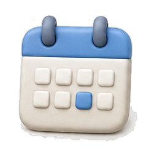
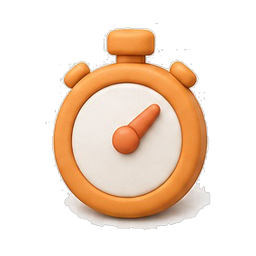
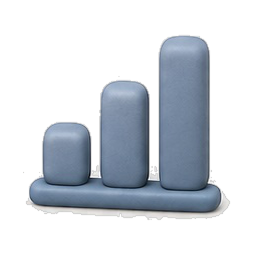

계획한 대로 해냈는가 — 매일 밤, 그 숫자가 하루를 달아오르게 합니다.

기상 → 이동·출근 → 오전 업무 → 점심 CS 5문제 → 저녁 자소서. 목표는 정량으로 — 영상 2개, 책 200p.

남은 27:43이 눈앞에서 흐르고 알림 6건은 보류됩니다. 딴짓도 숫자로 남습니다.

달성률과 실패 원인 — 졸음 · 과몰입 · 알림 · 목표 과다 — 을 답해야 다음으로 넘어갑니다. 하루는 일기와 대시보드로 닫힙니다.